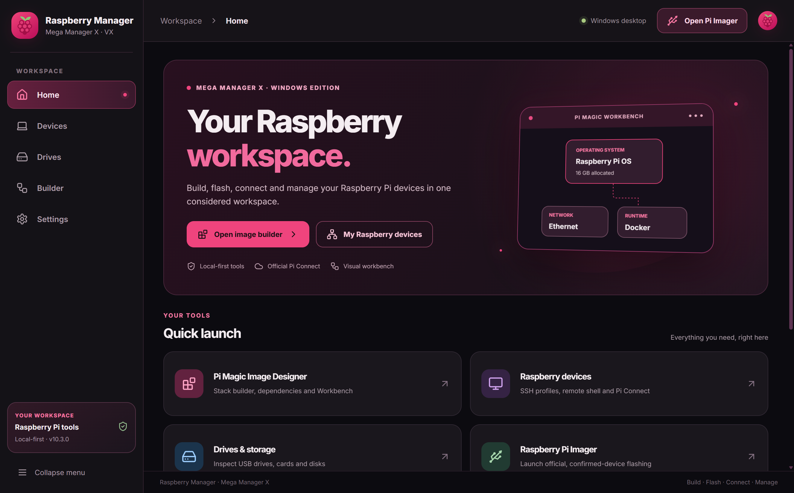
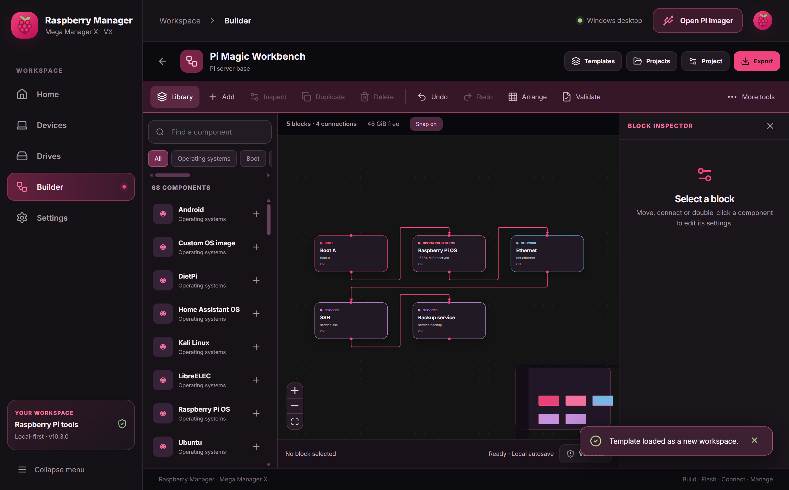

Pi Magic Image Designer
Stack blocks for OS, boot and storage planning with capacities, dependencies and validation.
A complete companion for your Pi projects. Plan your image, connect to devices, manage storage and open official flashing tools — on Android and Windows, in the same recognizable Berry design.

Flash, access and manage your devices in one place.
From a quick SD-card job to a complex service stack, the right tools should be easy to find — and honest about what they actually execute.
Stack blocks for OS, boot and storage planning with capacities, dependencies and validation.
Pan, zoom, connect, edit, group, arrange and export up to 256 nodes in a visual graph.
Saved local profiles, encrypted SSH terminal and explicit new-host fingerprint verification.
The official Raspberry Pi account and WebRTC client, brought into the app with native controls where supported.
Review storage devices before choosing to flash. Disk writing always requires a separate user confirmation.
Open the native Imager on Android or the official Raspberry Pi Imager workflow on Windows.
Pi Magic Workbench turns operating systems, dependencies, runtimes and services into a readable map. Move blocks freely, choose what depends on what and keep your plan portable with JSON exports.

Captured directly from the running Windows application, without replacing functional screens with concept art.
Quick access to the Pi Magic designer, SSH devices, disks and flashing.
Card capacity, boot stack, allocation and EmulateLoad diagnostic.
Edit 68 component types with connection-aware layouts and inspector.
These genuine Android screenshots show the preceding v10.2 interface. Version 10.3 updates these areas; the pictures are historical design references.
Two platform-native builds. One Raspberry Manager identity.
Desktop installer with the visual Workbench, SSH terminal, native storage overview and embedded Connect.
Native Android manager with the image builder, Workbench, SSH profiles, Raspberry Connect and USB/SD imaging.
Clear boundaries matter as much as features.
Yes, through platform-specific imaging. Windows launches the official Raspberry Pi Imager, which confirms the disk before erasure. Android uses its own native imaging workflow. The visual stack designer is a planning tool, not a bootable image generator.
Yes. The official provider pages run in a dedicated embedded browser profile. Supported device information is presented through app controls; secure login and remote view remain part of Raspberry Pi Connect. No browser cookie extraction or unofficial token handling.
They share the same design and major workspace features, including the compatible Workbench JSON model. Android and Windows use different platform-specific disk, installer and connection integrations. Some exports and hardware flows differ.
No. EmulateLoad is a dependency/validation dry-run. It does not execute Raspberry Pi firmware, install an operating system or guarantee hardware compatibility.
Browse Android and Windows source, find build instructions, inspect licenses or report a bug. This is an independent project, not an official Raspberry Pi product.